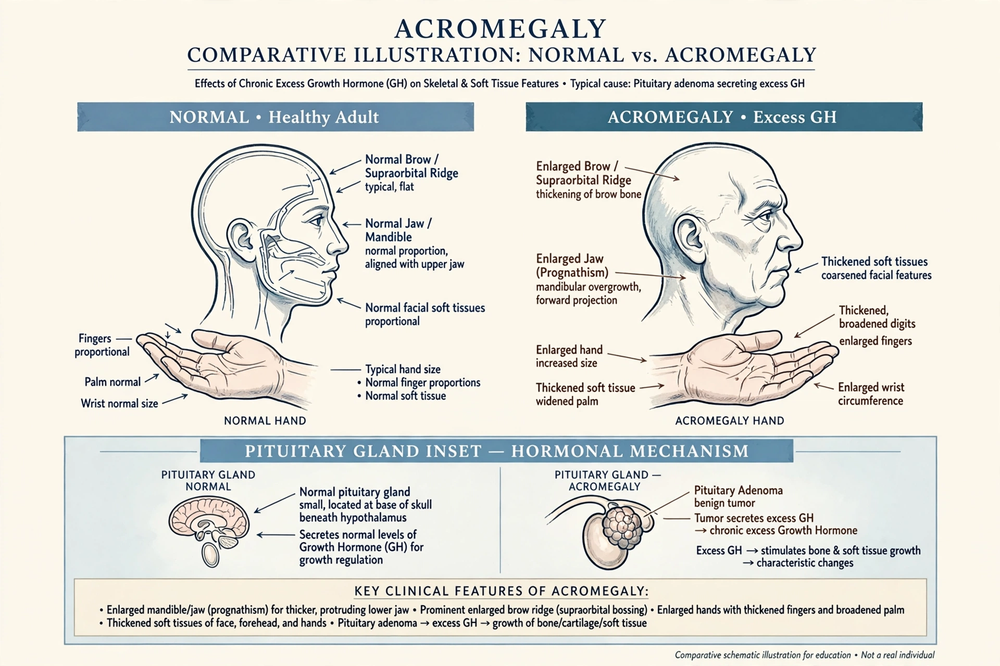

Acromegaly

| Specialty | Endocrinology |
|---|---|
| Symptoms | Enlargement of hands, feet, jaw and brow; joint pain; thickened skin |
| Cause | Excess growth hormone, usually from a pituitary adenoma |
| Treatment | Surgery, somatostatin analogues, radiation |
Acromegaly is a disorder that results from excess growth hormone (GH) after the growth plates have closed. It is due, in more than 95% of cases, to a benign tumour (adenoma) of the pituitary gland that secretes GH. Because the epiphyseal plates are fused in adults, bones cannot lengthen; instead they thicken, especially in the hands, feet, jaw and brow, producing gradual enlargement and coarse facial features. When excess GH occurs before the growth plates close, the result is gigantism.
Signs and symptoms
Symptoms develop slowly, often over years: enlarged hands and feet (rising ring and shoe sizes), protruding jaw (prognathism), enlarged tongue, thickened oily skin, excessive sweating, joint pain, headaches, and visual field defects if the tumour presses on the optic chiasm. Complications include type 2 diabetes, hypertension, cardiomyopathy, sleep apnoea and an increased risk of colon polyps.
Diagnosis and treatment
Diagnosis is by measuring insulin-like growth factor 1 (IGF-1) and confirming failure of GH to suppress during an oral glucose tolerance test, followed by MRI imaging of the pituitary. First-line treatment is transsphenoidal surgery to remove the adenoma. Medications — somatostatin analogues such as octreotide, the GH receptor antagonist pegvisomant, and dopamine agonists — control hormone excess when surgery is insufficient; radiotherapy is a further option. The condition was described by Pierre Marie in 1886, from whose work the name (Greek akron, extremity, + megas, large) derives.